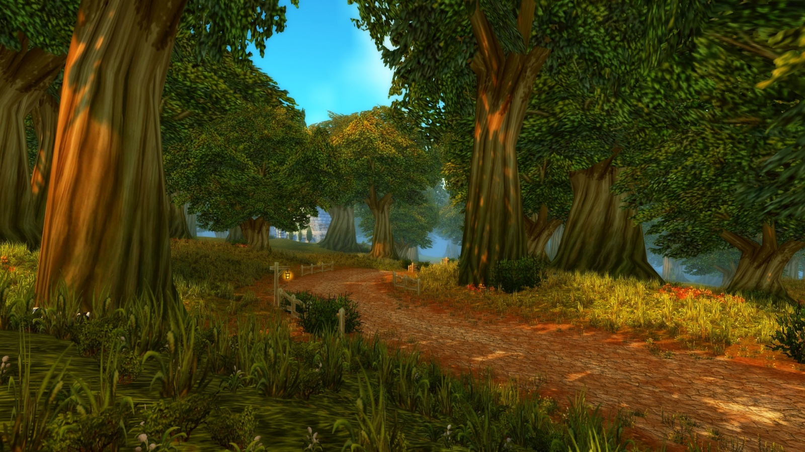
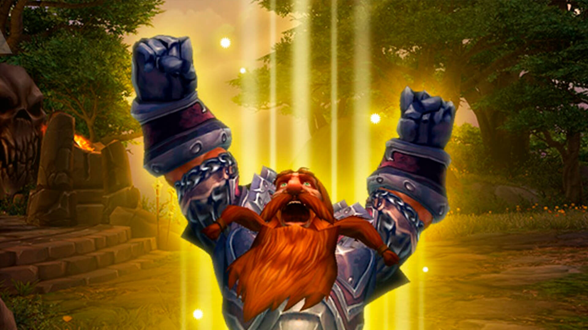

Classic vs. Modern World of Warcraft
Classic World of Warcraft takes players back to the game as it was at its original launch, before the sweeping changes of modern expansions. In Classic, progression is slower and more deliberate, creating a sense of accomplishment for every level gained, every quest completed, and every dungeon conquered. Unlike modern WoW, there are no streamlined leveling paths, automatic quest tracking, or frequent teleport options — players must explore, plan, and often rely on each other to navigate the world.
Combat in Classic feels more deliberate and tactical. Classes have fewer abilities than modern expansions, and every spell, cooldown, and talent choice carries weight. Player-versus-player encounters are more challenging and impactful, as battlegrounds and open-world faction conflicts are built around strategy and timing rather than convenience. Raids require careful coordination, and even leveling groups must communicate and work together to survive tougher areas.
In contrast, modern WoW focuses on accessibility, convenience, and faster progression. Questing is streamlined, travel is quicker, and talents are simplified to reduce complexity. While modern WoW offers more content, dynamic events, and cinematic storytelling, Classic emphasizes community, challenge, and nostalgia — a reminder of the world that originally captivated millions of players. For those seeking the pure, unfiltered experience of Azeroth, Classic WoW offers a journey unlike anything in the modern game.

A Deeper Look at Classic Differences
While the major contrasts between Classic and modern WoW are immediately apparent — slower leveling, more challenging combat, and a strong focus on community — there are also many smaller changes that give Classic its distinct feel. These differences affect everything from questing and travel to combat mechanics and character progression, creating an experience that feels both familiar and refreshingly challenging for returning players.
Here are some of the key differences that define Classic WoW:
- Slower Leveling: Experience gain is slower, making each level more meaningful and encouraging exploration and questing.
- Full Talent Trees: Classes have full talent trees to choose from, rather than the simplified modern system.
- Manual Quest Tracking: Players must track quests themselves — no automatic markers or quest logs that update objectives in real time.
- No Dungeon Finder: Unless you choose to play on the classic anniversary realms, grouping for dungeons requires forming parties manually, enhancing community interaction.
- Travel Challenges: Mounts are obtained later, flight paths are limited, and traveling across continents can take significant time.
- Professions and Economy: Crafting and professions require more planning and effort, with the in-game economy playing a larger role.
- Simpler User Interface: Less automation and fewer conveniences mean players rely on addons or skill for optimization.
- Raid Difficulty: Raids demand precise coordination, longer fights, and more preparation compared to modern raids.
- Smaller Ability Pools: Combat feels more deliberate because each ability has more impact.
Milestones and Memorable Achievements
One of the defining features of Classic World of Warcraft is the sense of accomplishment tied to major milestones. Every stage of your journey feels earned, and reaching key goals provides a real sense of progress and pride. Unlike modern WoW, where conveniences can make achievements feel automatic, Classic emphasizes effort, planning, and collaboration.
Some of the most memorable milestones in Classic WoW include:
- Obtaining Your First Mount at Level 40: A significant milestone for any adventurer, as mounts dramatically improve travel speed and efficiency. Acquiring a mount requires gold, traveling to a trainer, and sometimes patience, making it a meaningful achievement.
- Reaching Level 60: The original level cap, representing countless hours of questing, dungeon runs, and exploration. Hitting level 60 is a rite of passage, unlocking access to the full range of endgame content.
- Completing Your First Raid — Molten Core: Teaming up with a group for your first raid is an unforgettable experience. Molten Core, the first endgame raid in Classic WoW, challenges players with coordinated strategy, difficult bosses, and the chance to earn epic loot.
- Conquering the Endgame Raids: After Molten Core, ambitious players progress to higher-tier raids like Onyxia’s Lair or Blackwing Lair. These ultimate challenges test coordination, skill, and dedication, rewarding players with legendary gear and a true sense of accomplishment.
